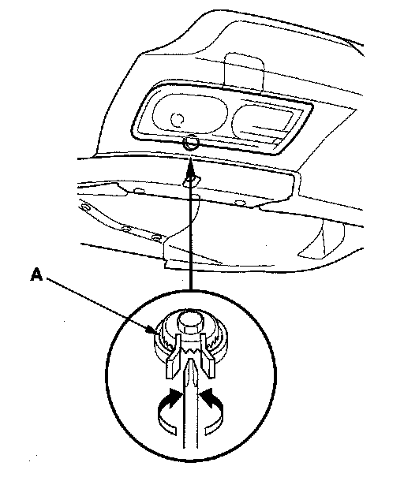

Fog/Driving Lamp: Adjustments
Fog Light/Daytime Running Light AdjustmentBefore adjusting the fog light/daytime running light:
- Park the vehicle on a level surface.
- Make sure the tire pressures are correct.
- Have the driver or someone who weighs the same sit in the driver's seat.

Adjust the fog lights/daytime running lights to local requirements by turning the adjuster (A).